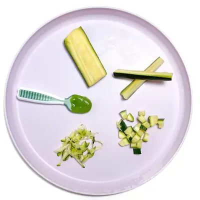

Easy-Peasy Zucchini Baby Food: Puree & Baby-Led Weaning

Ingredients
- 2 medium zucchini, (roughly chopped)
- 2-3 sprigs cilantro (optional)
- 1 medium zucchini
- 1 medium zucchini, (roughly chopped)
- 2 cups caulilfower, (roughly chopped)
- 1 tbsp olive oil
- 1/8 tsp dried oregano (optional)
- 1 medium zucchini, (roughly chopped)
- 2 cups broccoli florets
- 1/2 cup peas
- 2 tbsp olive oil
- 2 tbsp parmesan (optional)
- 1 tbsp roasted unsalted sesame seeds (optional)
- 2 cups cooked pasta
Steps
- In a medium saucepan, bring 2″ of water to a boil over medium heat. Place the zucchini into a steamer basket, cover and cook for 8-10 minutes or until tender. Reserve steamer water. Let cool slightly.
- Place the cooked zucchini into a blender or food processor and add a pinch of dried oregano, or any spice/herb you are using. Turn on the blender or food processor and puree for 1-2 minutes on medium. If the puree is too thick, add in 1/4 cup of liquid at a time, until you achieve desired consistency.
- Serve and enjoy, or store some for later.
- Steamed: In a medium saucepan, bring 2" of water to a boil over high heat. Add a steamer basket and add the large spears of zucchini into the basket in a single layer. Cover and cook for 3-5 minutes or until just tender when pricked with a fork. Remove from heat and let cool.
- Roasted: Preheat oven to 425°F. Line a baking sheet with parchment paper, silicon mat or spray with cooking spray. Place the zucchini spears onto the baking sheet and cook for 15-20 minutes or until just tender. Let cool.
- Slice or chop the carrots to be age-appropriate for your baby. Serve and enjoy.
- Preheat the oven to 425°F. Line a baking sheet with parchment paper, silicon mat or spray with cooking spray. Place the zucchini and cauliflower onto the baking sheet and toss with the olive oil and oregano.
- Place the baking sheet in the oven and roast for 25-30 minutes or until tender when pricked with a fork. Let cool.
- Place the cooked zucchini and cauliflower into a blender or food processor and puree on high for 1-2 minutes, adding in liquid (fresh breastmilk, formula or water) if needed.
- Serve and enjoy, or freeze some for later.
- In a medium saucepan, bring 2″ of water to a boil over medium heat. Place the zucchini and broccoli into a steamer basket, cover and cook for 8-10 minutes or until just tender. Add in the peas, and cook for an additional 2 minutes. Reserve steamer water. Let cool slightly.
- Place the cooked zucchini, broccoli and peas into a blender or food processor and add in the olive, parmesan (if using), sesame seeds (if using) and pulse for a chunky puree or run for 1-2 minutes for a smooth puree. If the puree is too thick, add in 1/4 cup of the reserved liquid at a time, until you achieve desired consistency.
- Toss with the pasta and add an optional pinch of parmesan cheese.
Recipe by Baby Foode, from Baby Foode. Saved here for personal use; the original has the full notes, tips and photos. Open original